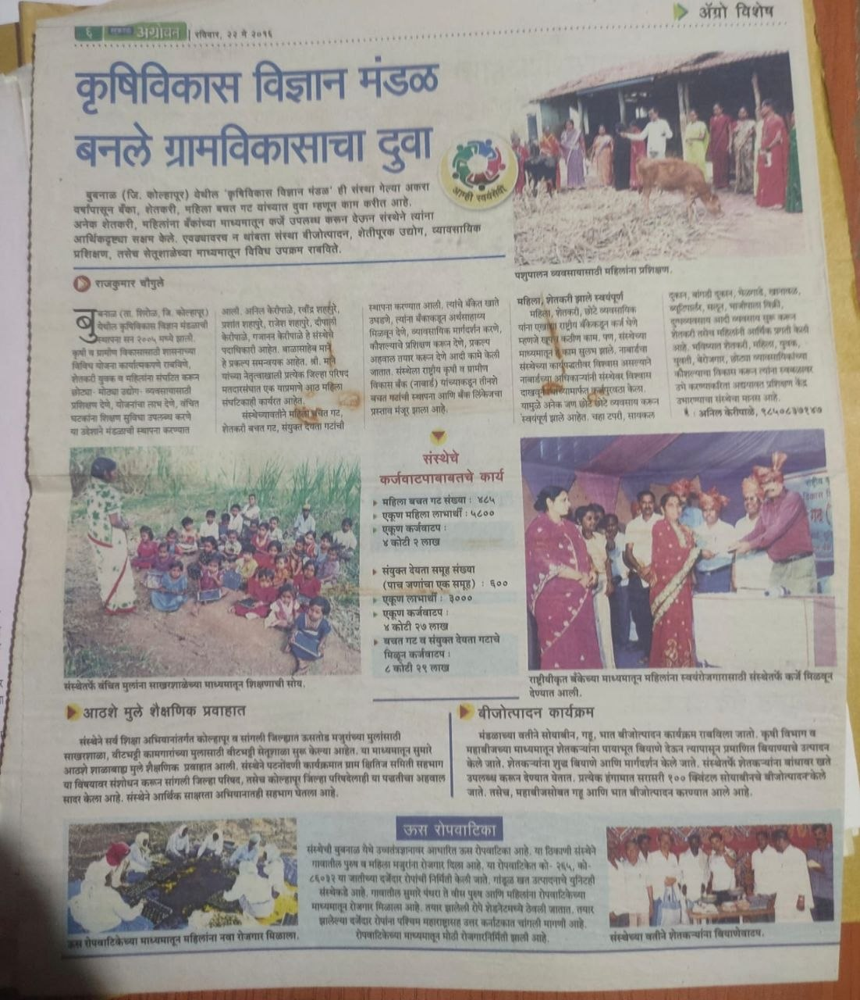
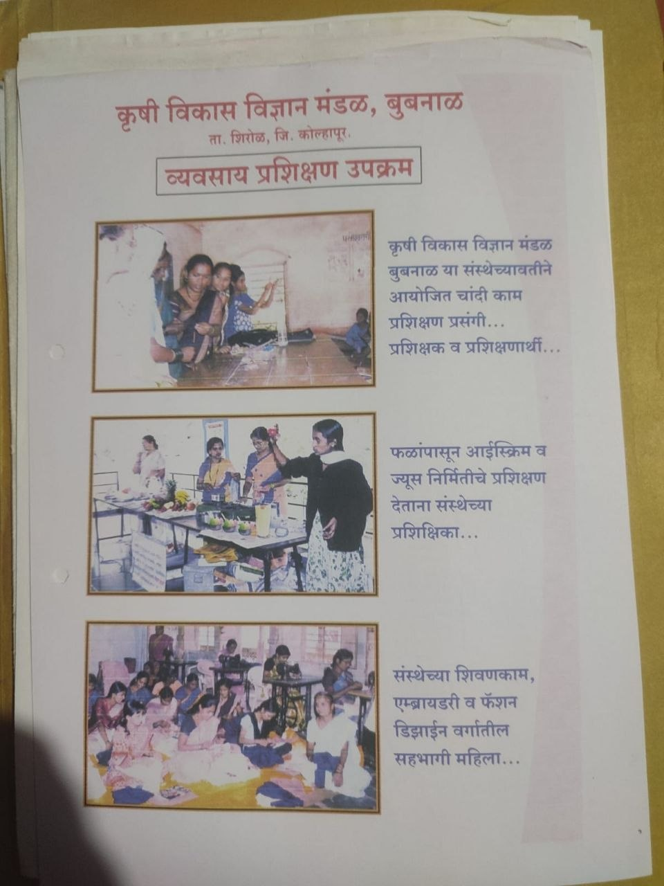
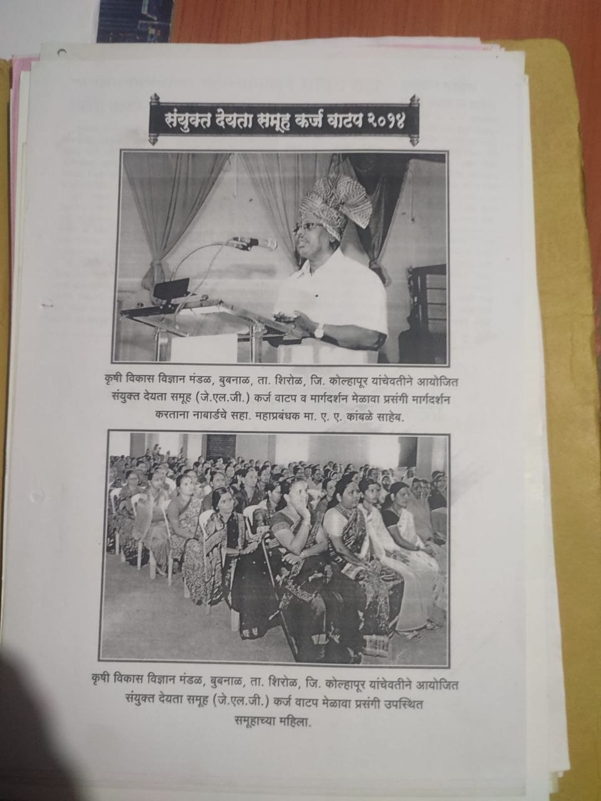
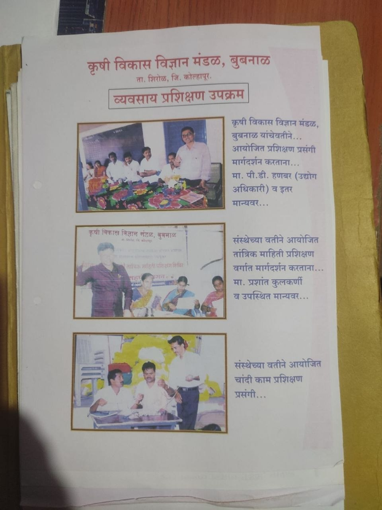
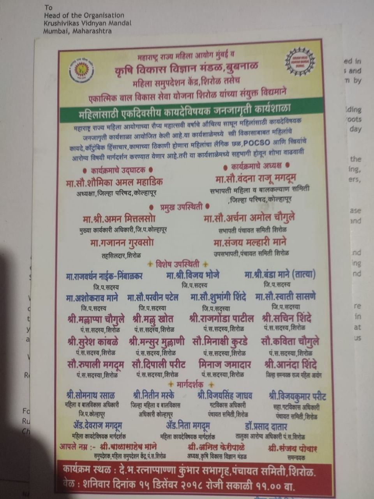
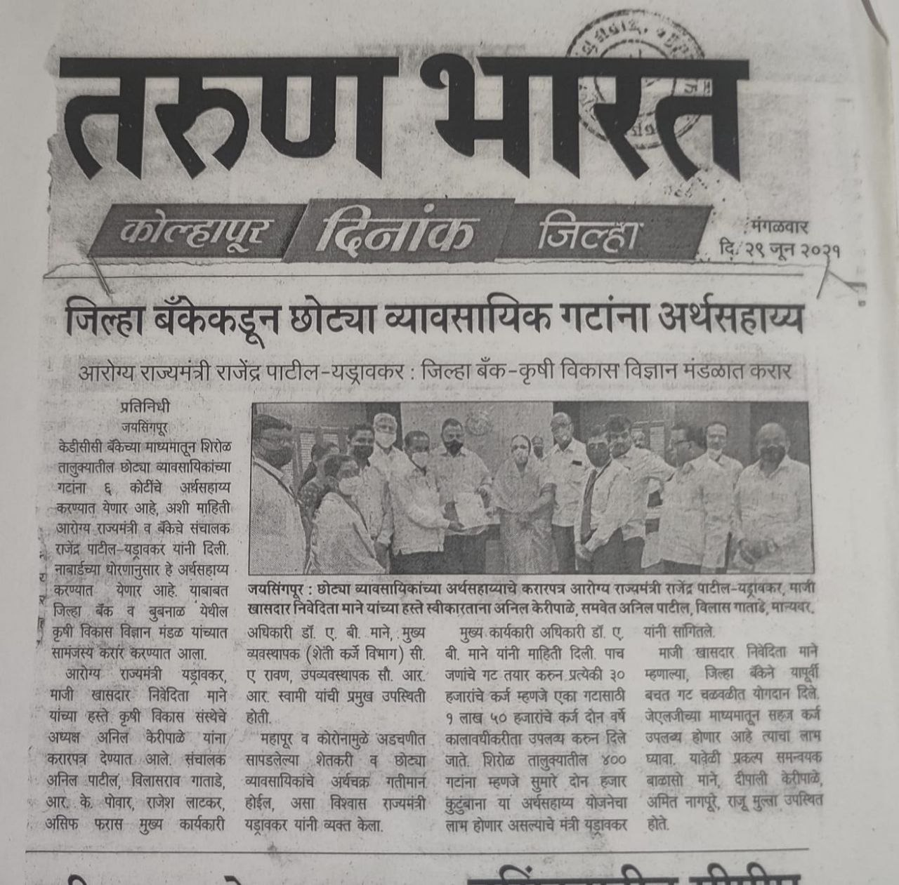
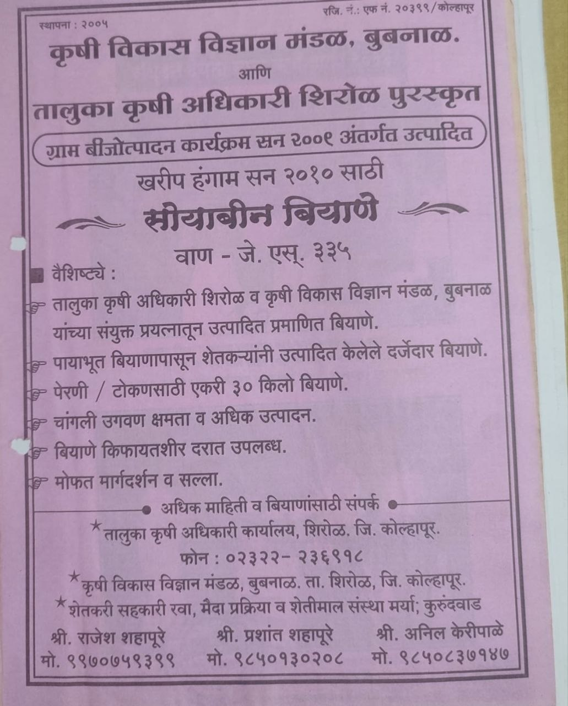
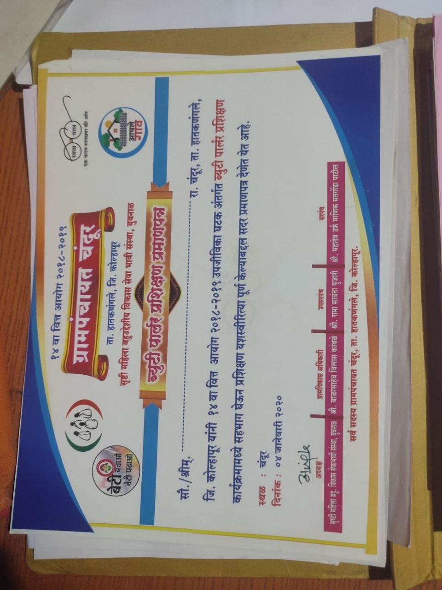
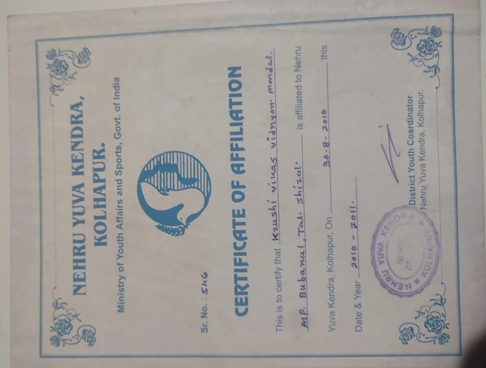

NABARD NGO · Kolhapur · Since 2005
Krushi Vikas Vidnyan Mandal, Bubnal
A rural development NGO working with communities, government departments, banks, training partners and local organisations to bring education, livelihood skills and practical support closer to villages.



About the NGO
Building confidence through practical rural action
Krushi Vikas Vidnyan Mandal, Bubnal works as a bridge between rural families and the organisations that can support them. Its work spans education, training, financial inclusion, agriculture support, women empowerment and community awareness.
The organisation has helped backward communities access education, organised vocational training for women and rural youth, worked with self-help groups, and supported liaisoning for projects with banks, government departments and development partners.
Program areas
Focused work across education, skills and livelihoods
Sakharshala education
KVVM took initiative to provide education for children of sugarcane farm workers, helping children from highly backward and migrant families continue learning through Sakharshala.
Skill development
Training programs include shivan kam and tailoring, fashion design skills, handicraft activities, food processing awareness and FSSAI rules and regulation orientation for safe local enterprise.
Women self-help groups
KVVM works with many bachat gat groups to encourage regular savings, internal lending, bank linkage, enterprise training, product making and market access for rural women.
Bank and project liaisoning
The organisation coordinates with banks and institutions so rural people can access schemes, training, small-business support and financial assistance with clearer guidance.
Agriculture guidance
KVVM has supported farmers through seed-related information, crop guidance, rural technology awareness and village development activities linked to agriculture.
Community awareness
Workshops and public programs cover women and child development, POCSO awareness, health, safety, livelihoods and social welfare topics relevant to rural families.
Bachat Gat work
Why self-help groups matter
Women self-help groups help members save regularly, access small credit, receive training, start micro-enterprises and build confidence in public and financial decision-making. KVVM's role is to strengthen this village-level platform through guidance, documentation, liaisoning and training.
Savings disciplineRegular group savings and transparent records.
Micro-enterpriseTailoring, food products, handicrafts and local services.
Bank accessSupport for loan, scheme and financial linkage processes.
Market readinessTraining, quality awareness and product presentation.
Gallery
Documents, trainings and community programs






Contact
Work with KVVM
For training programs, NGO liaisoning, community development projects or partnership discussions, contact the KVVM representative below.
Krushi Vikas Vidnyan Mandal, Bubnal, Tal. Shirol, Dist. Kolhapur